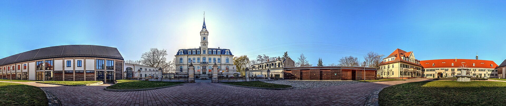
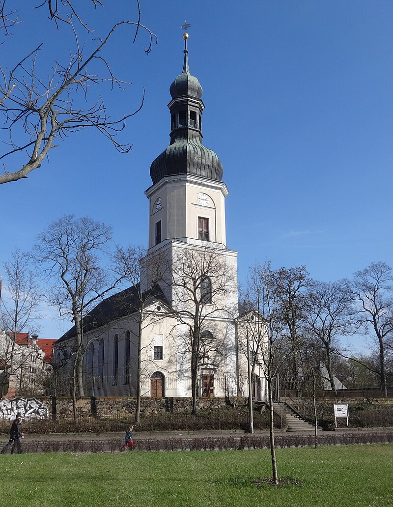
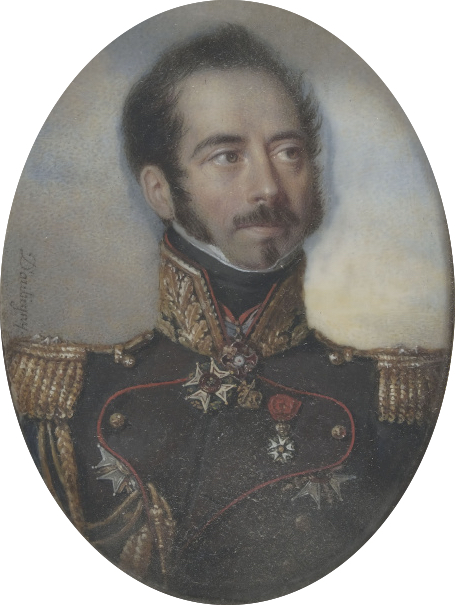
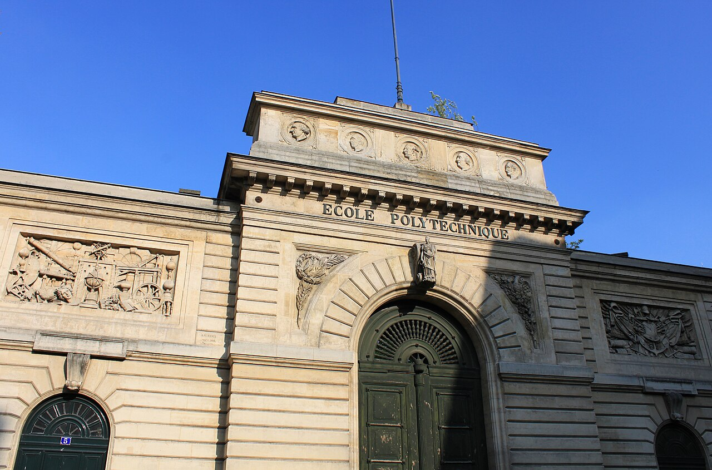
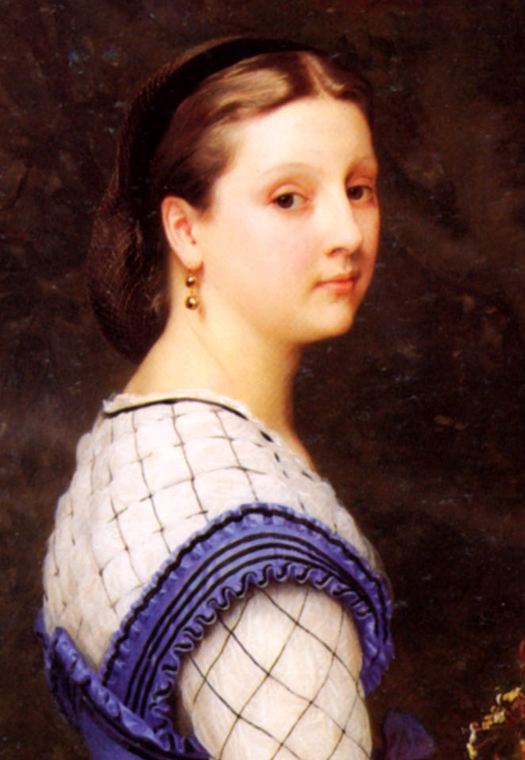

라이프치히 전투 (21) - 나폴레옹의 번민
게시: 2025-10-13T06:30:27+09:00
라이프치히 전투 첫날인 10월 16일 비록 북쪽 뫼케른 전투에서는 블뤼허가 승리를 거두었지만, 마르몽은 불과 2~3km를 물러났을 뿐이었고 병력 손실도 블뤼허가 약간 더 많았습니다. 또한 주전장인 남쪽 리버트볼크비츠-마클리베르크 전선, 그리고 연합군의 시선 끌기용 보조 공격이었던 서쪽 린더나우 방면에서는 나폴레옹의 판정승이라고 할 수 있었습니다. 공격한 쪽이 연합군이었는데, 연합군은 아무런 성과를 내지 못하고 원위치로 밀려났을 뿐만 아니라, 나폴레옹측보다 더 많은 사상자를 냈기 때문입니다. 전체 전선에서 볼 때, 나폴레옹측의 손실은 대략 2만5천, 연합군은 3만 정도였습니다. 같은 해 8월 26일 드레스덴 전투 첫날 상황도 이와 크게 다르지는 않았습니다. 당시 나폴레옹측은 첫날 전투에서 2천 정도를 잃었고 연합군은 약 6천 정도를 잃었습니다. 그날 밤, 연합군 수뇌부는 약간이나마 후퇴를 고려했었습니다. 첫날 전투에서 워낙 연합군의 손발이 맞지 않았던데다, 밤 사이 나폴레옹측에게는 증원군 5만이 도착하여 12만이 되었고, 연합군에게는 별다른 증원군이 없어서 여전히 19만 정도의 병력을 유지했기 때문이었습니다. 결국 그런 수적 우세를 유지한 상황에서 후퇴한다는 것은 너무나 체면이 상하는 일이었기에 그냥 하루 더 싸우기로 하긴 했지만, 그 결과는 아시다시피 매우 좋지 않았습니다. 다음 날 속개된 전투에서 나폴레옹은 대승을 거두어 2만5천에 달하는 포로를 잡는 개가를 올립니다. 그게 불과 2달도 지나지 않은 일이었습니다. 따라서, 연합군이나 나폴레옹이나 드레스덴 전투 첫날밤의 상황과 현재 상황을 비교하지 않을 수가 없었을 것입니다. 어떻게 보면 그때 당시와 비슷한 점이 많았습니다만, 분위기는 완전히 달랐습니다. 먼저, 나폴레옹 사령부는 완전히 초상집 분위기였습니다. 나폴레옹은 첫날 순간적으로 만들어진 병력 우위를 이용하여 반드시 승리를 낚아내야 했는데 실패했기 때문이었습니다. 원래 이렇게 좁은 전장에서 내선이동의 장점을 살린다는 것은 매우 위험한 도박입니다. 그야말로 성공하면 내선이동을 이용하여 적을 각개격파하는 것이고, 실패하면 그냥 포위되는 것이기 때문입니다. 나폴레옹은 그 위험성을 알고도 첫날 승리에 모든 것을 다 걸고 도박을 한 것이었는데, 결과적으로 실패한 것입니다. 게다가 북쪽에서 들려오는 맹렬한 포성, 그리고 아무리 불러도 마르몽의 제6군단이 오지 않는 것을 보고 북쪽에서 블뤼허와 베르나도트의 방면군과 격전이 벌어졌다는 것을 나폴레옹도 짐작은 하고 있었습니다. 쉰너펠트(Schönefeld)에서 네가 보내온 마르몽의 뫼케른 전투 패전에 대한 소식은 새벽 1시에야 나폴레옹에게 전달되었는데, 그로써 결국 나폴레옹은 자신이 연합군의 포위망 안에 갇히게 되었다는 것을 확실히 알게 되었습니다.

(네가 지휘부로 삼았던 쇤너펠트(Schönefeld)는 독일어로 아름다운 들판이라는 뜻의 지명입니다. 13세기 문헌부터 그 지명이 나오기 시작하는데, 독일 30년 전쟁 때 잿더미가 되었다가 재건되었고, 1813년 이 라이프치히 전투 셋째날에 다시 잿더미가 됩니다. 물론 또다시 재건되어, 1820년에 새로 지어진 교회는 라이프치히 전투에서 희생된 사람들을 기리는 쇤너펠트 추모교회(Gedächtniskirche Schönefeld)로 명명되었습니다. 사진은 현재의 파노라마 모습으로서, 가운데에 보이는 으리으리한 건물이 쇤너펠트 궁전(Schloss Schönefeld)입니다.)

(위에서 언급한 쇤너펠트 추모교회(Gedächtniskirche Schönefeld)입니다. 원래 이 자리에는 14세기 경부터 이미 교회가 있었고, 1526년 화재로 소실되었으나 곧 다시 지어졌습니다. 그게 다시 완전히 파괴된 것이 1813년 라이프치히 전투때였습니다. 그 폐허에는 1816년부터 새 교회 건물이 지어지기 시작하여 1820년 완공되었는데, 이 교회는 음악가 슈만(Robert Schumann)과 피아니스트 클라라(Clara)가 1840년 결혼식을 올린 장소로 유명합니다.) 그럼에도 불구하고, 나폴레옹은 어쩌면 남쪽의 보헤미아 방면군이 밤사이 후퇴할지도 모른다는 막연한 희망을 가지고 있었습니다. 나폴레옹도 이미 베니히센의 폴란드 방면군 등 수만의 증원군이 남쪽 보헤미아 방면군에게 곧 도착한다는 사실을 알고 있었습니다. 그러나 전장에서는 언제나 뜻하지 않은 일이 벌어지기 마련이었고, 첫날 전투에서 보헤미아 방면군이 보여준 전술적 기동은 그들이 드레스덴 전투 때에 비해 그다지 향상되지 않았다는 것을 잘 보여주었습니다. 드레스덴 전투에서 압도적인 수적 우위를 가지고도 보헤미아 방면군이 참패했던 이유는 그들의 좌익-중앙-우익이 서로 유기적으로 서로를 지원하지 못하고 따로 놀다가 각개격파 당한데다, 특히 좌익이 비로 불어난 바이서리츠강에 의해 완전히 고립되어 있었기 때문이었습니다. 보헤미아 방면군 수뇌부, 최소한 슈바르첸베르크는 그때 경험에서 배운 바가 하나도 없었는지, 라이프치히 전투에서도 플라이서강에 의해 좌익이 완전히 분리된 상태였고, 비트겐슈타인의 중앙-우익 공격도 5갈래로 완전히 분리되어 있었습니다. 그러니 혹시 이번에도 보헤미아 방면군이 자신감을 잃고 그냥 물러서지 않을까 하는 희망이 약간은 있었던 것입니다. 17일 새벽까지 나폴레옹은 거의 잠을 자지 못했는데, 주된 이유는 날아간 승리에 대한 절망 때문이었지만 일부는 그렇게 의외로 적군이 후퇴할지도 모른다는 희망과 함께, 만약 정말 보헤미아 방면군이 후퇴한다면 그들을 추격해야 하나, 방향을 돌려 블뤼허를 공격해야 하나, 혹은 하늘에 감사하며 재빨리 후퇴해야 하나 등등 고민해야 할 사항이 너무나 많았기 때문이었습니다. 그러나 가장 큰 고민은 역시 연합군이 다음날 후퇴하지 않고 다시 공격해올 경우, 어떻게 해야 하는가에 대한 것이었습니다. 그럴 경우 승산이 없기 때문에 후퇴해야 한다는 것은 나폴레옹도 분명하게 알고 있었습니다. 17일 새벽 1시, 나폴레옹은 낭수티를 비롯한 주요 지휘관들을 자신의 숙소로 소집하여 각 부대의 현황을 들었기 때문이었습니다. 분명히 각 군단들은 지치고 사기가 떨어져 있었으며, 대치하고 있는 적군은 아군보다 병력이 더 막강했습니다. 특히 나폴레옹을 좌절시킨 부분은 따로 있었습니다. 그의 참모 중 하나인 구르고(Gaspard Gourgaud) 대령이 말을 몰아 각 군단들의 현황을 직접 살피고 온 뒤 보고한 바에 따르면, 병사들의 피로와 사기 저하도 심각했지만 더 큰 문제는 탄약 부족이었습니다. 특히 포병대들이 전날 전투에서 생각보다 훨씬 더 많은 양의 포탄을 쏘아댔기 때문에, 한 번 더 동일한 강도의 전투가 벌어진다면 전투 도중에 탄약이 바닥날 상황이었던 것입니다. 이건 델마의 사단과 함께 일부 탄약 수송차가 아일렌부르크에서 도착하긴 했지만, 일부는 랑쥬롱의 러시아군과의 전투에서 노획되었고, 일부는 적에게 나포될 것을 두려워하여 토르가우 요새로 되돌아 가버렸기 때문이기도 했습니다. 나폴레옹은 현지 조달에 의존하여 보급품 없이 싸우는 것이 장기 중 하나였지만, 그런 그도 언제나 탄약은 후방 보급에 의존했었습니다. 결국 나폴레옹은 탄약 부족 때문에라도 후퇴할 수 밖에 없다고 이미 17일 새벽에 결론을 내렸습니다.

(구르고 대령입니다. 나폴레옹보다 14살 연하로서, 1813년 당시 딱 30세였던 그는 베르사이유 궁전 인근 마을에서 태어났는데, 아버지가 왕궁 교회 소속 음악가 중 하나였습니다. 귀족은 아니었다는 이야기지요. 그는 어려서부터 수학에 뛰어난 재능을 보여주었는데, 프랑스 대혁명은 그에게 과거라면 불가능했을 길을 열어주었습니다. 바로 에콜 폴리테니크(École Polytechnique)에 1799년 입학하여 공부한 뒤 1802년 포병 소위로 임관하게 된 것입니다. 그는 아우스테를리츠 전투에서 부상을 입기도 했고, 특히 1809년 제5차 대불동맹전쟁에서는 거의 모든 주요 전투에 다 참전했습니다. 똑똑하고 의욕에 넘쳤던 그는 곧 눈에 띄었고, 1811년부터는 나폴레옹의 참모진에 발탁되어 그를 보좌했습니다.)

(그냥 똑똑한 시골 마을 농부로 늙었을 구르고를 유명한 장군으로 만들어준 것은 바로 프랑스 대혁명 몇 년 후인 1794년 국민공회가 설립한 에콜 폴리테니크(École Polytechnique)였습니다. 원래 창설될 때는 공공업무 중앙 학교(École centrale des travaux publics) 라는 이름이었으나 때가 때인 만큼 졸업생들 상당수가 군 장교가 되었으며, 1804년에는 나폴레옹에 의해 아예 사관학교로 바뀌면서 에콜 폴리테니크가 되었습니다. 당시 프랑스에는 이것 말고도 다른 사관학교도 있었으며, 이렇게 복수의 사관학교에서 배출된 장교들이 서로 경쟁하도록 장려되었습니다. 사진은 예전의 에콜 폴리테니크 중앙 건물로서, 파리의 데카르트 가에 있습니다.)

(구르고가 가장 유명해진 것은 1814년 브리엔(Brienne) 전투에서 나폴레옹에게 창을 겨누고 달려드는 코삭을 가로막고 권총으로 사살하여 나폴레옹의 목숨을 구한 사건입니다. 실은 이때 그도 그 코삭의 창에 찔렸는데, 그가 드레스덴 전투에서 받은 레종도뇌르 훈장의 십자가가 창끝을 막아주는 바람에 목숨을 구했다고 합니다. 구르고는 나중에 나폴레옹이 영국에 항복할 때도 그 세부사항을 협상했고, 세인트 헬레나 섬까지 나폴레옹을 따라갔습니다. 그러나 그의 모난 성격은 다른 부하들, 가령 라 카즈(Las Cases)나 몽톨롱(Montholons)과 갈등을 일으켰고, 결국 도중에 세인트 헬레나 섬에서 나오게 됩니다.)

(구르고가 세인트 헬레나 섬을 도중에 박차고 나온 결정적 이유는 상관인 몽톨롱에게 결투를 신청했고 그에 대해 나폴레옹 본인으로부터 엄중히 질책당했기 때문이었습니다. 그런데 야단을 맞을 만했던 것이, 구르고는 몽톨롱에게 결투를 신청하면서 그의 와이프인 알빈(Albine)을 '창녀'라고 불렀습니다. 이 초상화의 주인공인 알빈은 복잡한 과거를 가진 귀족 출신 여성이었는데, 진위 논란이 있기는 하지만 세인트 헬레나에서 나폴레옹의 정부 역할을 하기도 했다고 의심받고 있었으니 나폴레옹이 정말 화를 낼 만도 했습니다. 일이 나중에 더 꼬인 것이, 알빈이 나중에 세인트 헬레나 섬에서 영국군 장교와 불륜을 저지르는 바람에 나폴레옹이 그녀를 섬에서 내보냈다는 점입니다. 거기서 그치는 것이 아니라, 알빈의 남편 몽톨롱은 영국의 사주를 받아 나폴레옹을 비소로 조금씩 독살한 인물로 의심받기도 합니다. 물론 명백한 사실로 밝혀진 것은 아닙니다.) 문제는 탈출로였습니다. 가장 상식적인 것은 프랑스쪽으로 후퇴하는 것이었는데, 그 방면의 출구가 린더나우였고 거기엔 귤라이의 오스트리아 제3군단이 틀어막고 있었습니다. 거기서 귤라이와 교전하다가 지체가 길어질 경우, 까딱하면 북쪽의 블뤼허-베르나도트 그리고 남쪽의 보헤미아 방면군에게 협격당하기 딱 좋았습니다. 반대로 허를 찔러 남동쪽 드레스덴이나, 혹은 북동쪽 토르가우로 탈출하는 것도 방법이 될 수는 있었는데, 문제는 그 다음에는 어떻게 할 것이냐는 것이었습니다. 바로 며칠 전 블뤼허와 베르나도트를 놓친 뒤 즉흥적으로 구상했듯이 베를린으로 향할 수도 있었을 것입니다. 토르가우나 드레스덴에는 식량은 몰라도 탄약은 충분히 있었으니 거기서 부족한 탄약을 보충할 수 있었을 것이니까요. 그러나 이때의 나폴레옹은 이미 기가 꺾였는지 베를린 진공을 논의했다는 기록은 없습니다. 나폴레옹이 이렇게 좌절과 희망이 뒤섞인 채 뜬눈으로 새벽을 맞이할 때, 슈바르첸베르크 등의 보헤미아 방면군 수뇌부 분위기는 어땠을까요? Source : The Life of Napoleon Bonaparte, by William Milligan Sloane Napoleon and the Struggle for Germany, by Leggiere, Michael V With Napoleon's Guns by Colonel Jean-Nicolas-Auguste Noël https://www.britannica.com/event/Napoleonic-Wars/Dispositions-for-the-autumn-campaign https://www.historyofwar.org/articles/battles_leipzig_16_october.html https://warhistory.org/@msw/article/leipzig-battle-of-the-nations https://www.napolun.com/mirror/napoleonistyka.atspace.com/Leipzig_battle.htm https://en.wikipedia.org/wiki/Ged%C3%A4chtniskirche_Sch%C3%B6nefeld https://en.wikipedia.org/wiki/Leipzig-Sch%C3%B6nefeld https://fr.wikipedia.org/wiki/Gaspard_Gourgaud https://fr.wikipedia.org/wiki/%C3%89cole_polytechnique_(France) https://fr.wikipedia.org/wiki/Charles-Tristan_de_Montholon https://fr.wikipedia.org/wiki/Albine_de_Montholon